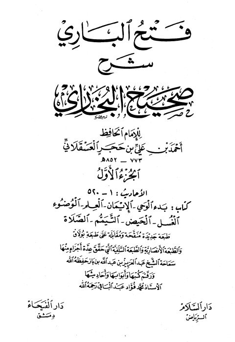
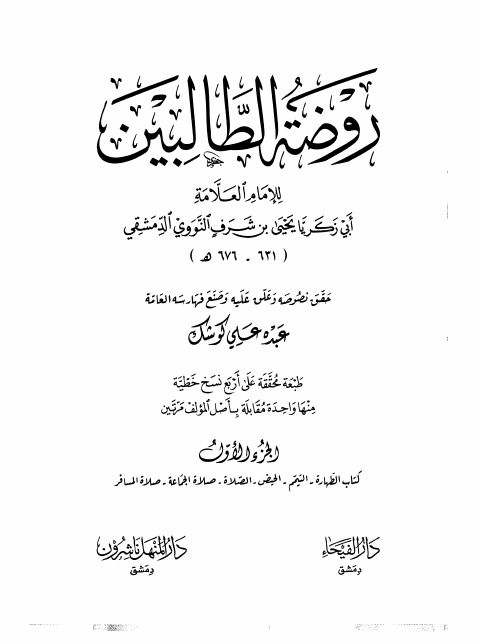
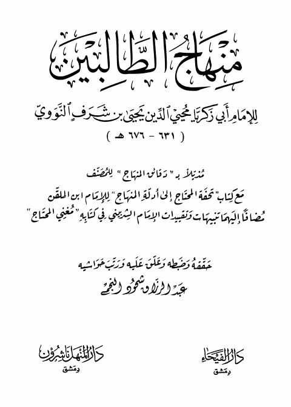

فتح الباري شرح صحيح البخاري- الفيحاء فتح الباري شرح صحيح البخاري- الفيحاء أحمد بن علي بن حجر العسقلاني
روضة الطالبين روضة الطالبين يحيى بن شرف النووي
منهاج الطالبين للإمام النووي مذيلا بتحفة المحتاج في أدلة المنهاج للإمام ابن الملقن منهاج الطالبين للإمام النووي مذيلا بتحفة المحتاج في أدلة المنهاج للإمام ابن الملقن محيي الدين يحيى بن شرف النووي